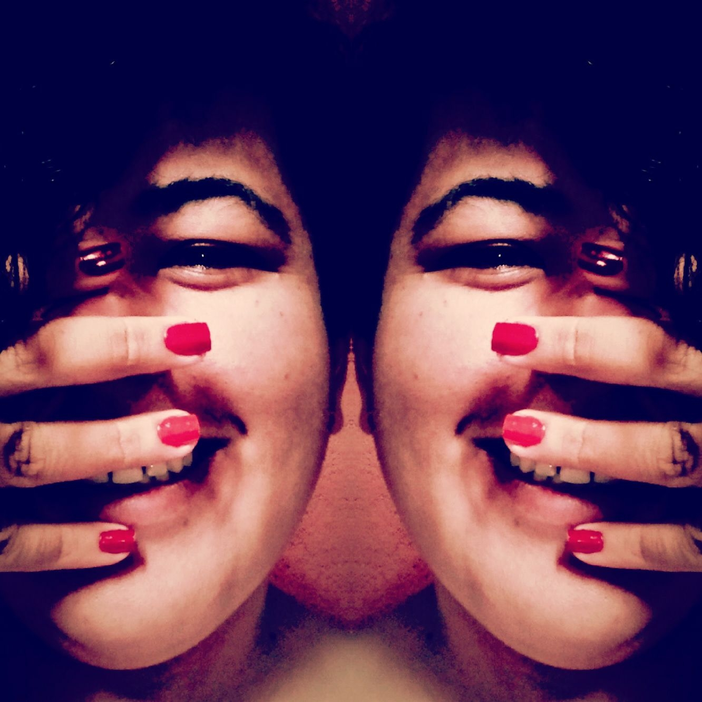

Eu sou uma peixe por que naci o 23 de febreiro do 1989, sim tenho 32 anos, não sou uma peixe tao velha, aunque as creeincias falen que sim (kkkk) voltemos a historia, minha raiz tem muitos origenes mas o primeiro é Venezuela meu pais e minha ciudade Caracas, despois Maturín, e minha grão mudança Brasil, entao agora sou uma mistura, gosto de chamarme cidadão do mundo.
